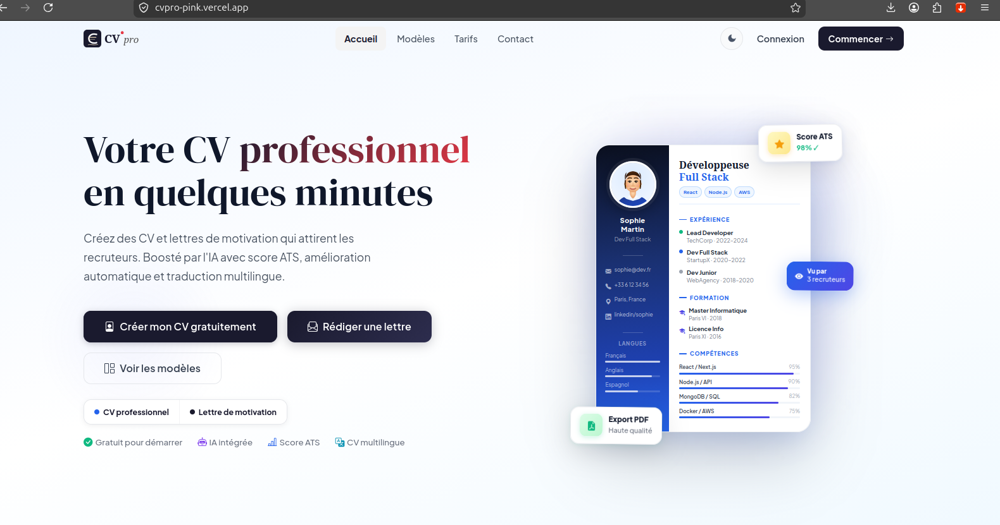
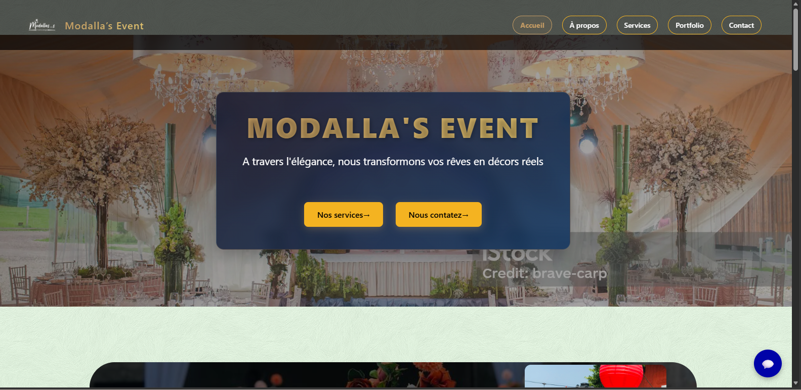
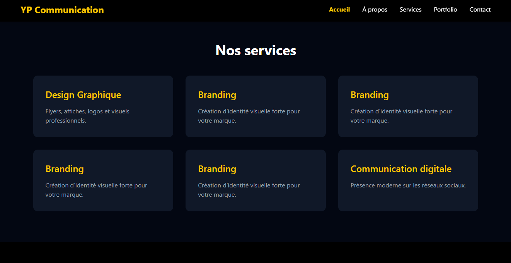
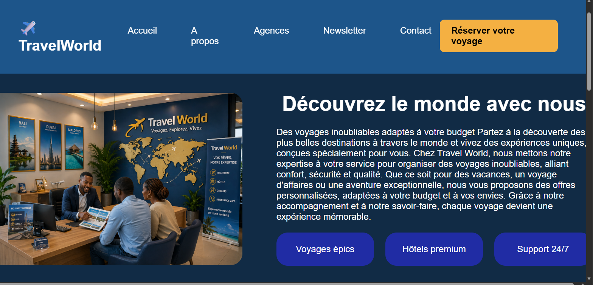

// portfolio de développeuse web
Développeuse web en formation fullstack, passionnée par l'intelligence artificielle et curieuse de tout ce qui touche au web moderne.
$ cat profil.txt
Jeune développeuse web en formation, passionnée par l'innovation technologique et l'intelligence artificielle. Curieuse et rigoureuse, je fais preuve d'une grande capacité d'adaptation face aux nouvelles technologies et j'apprends vite.
Motivée à mettre mes compétences techniques au service de projets concrets, je recherche une opportunité — stage ou premier poste — pour continuer à progresser aux côtés d'une équipe qui aime bien faire les choses, et pour transformer ce que j'apprends en produits que de vraies personnes utilisent.
$ ls competences/
$ front-end
$ back-end
$ outils
$ veille
$ cat formation.log
Une formation pensée autour de la pratique : chaque notion apprise se retrouve, quelques jours plus tard, dans un vrai projet à livrer. C'est ce rythme qui m'a fait passer du premier "Hello World" à des applications complètes, du front au back.
EIG Bénin
Un parcours intensif qui couvre l'ensemble de la chaîne de développement web, du premier croquis d'interface jusqu'à la mise en ligne d'une application fonctionnelle.
$ ls projets/

Conception et intégration de l'interface utilisateur pour un outil de génération de CV professionnels, au sein d'une équipe de développement.
Voir le site →
Site vitrine conçu pour Modella's Event, une entreprise de décoration qui habille mariages, anniversaires, baptêmes et événements professionnels d'ambiances élégantes et sur mesure. L'enjeu : traduire en ligne le même soin du détail que sur le terrain, avec une mise en page qui donne envie de faire défiler les réalisations.
Voir le code →
Site de communication digitale réalisé pour un graphiste, dans le cadre d'un projet client réel. L'objectif était de mettre en valeur ses réalisations et son identité visuelle à travers une interface claire, qui laisse toute la place aux visuels sans jamais leur faire de l'ombre.
Voir le code →
Application de réservation de voyages permettant de consulter des offres et d'effectuer une demande de réservation de bout en bout. Premier projet fullstack complet : interface soignée côté client, logique de réservation et stockage des données côté serveur.
Voir le code →$ cat contact.json
Une opportunité, un projet, ou simplement envie d'échanger ? Écrivez-moi, je réponds toujours.